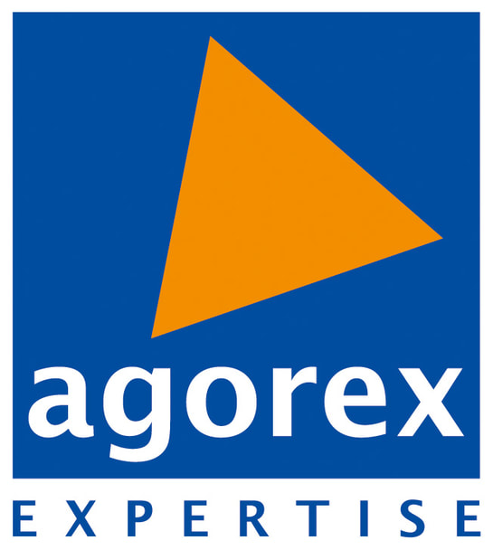

Mes 4 Expériences Clés
Décomposition STAR complète · Cliquez sur une carte pour voir les détails
Pilotage du Projet d'Assistant Virtuel IA
OUIGO (SNCF Voyageurs) · Saint-Denis
Cadrage fonctionnel, définition des flux conversationnels, collaboration avec les équipes tech/produit et analyse de la performance pour automatiser le selfcare voyageur à grande échelle.
Chatbot IA, PowerApps & Séminaire National
SNCF Optim'services (CSP Déplacements) · Saint-Denis
Supervision du Chatbot IA interne, refonte UX SharePoint, kits de déploiement PowerApps, ateliers digitaux et organisation clé en main du séminaire national des assistants de direction.
Instruction de Dossiers & JOP Paris 2024
Région Île-de-France (Service des Sports) · Saint-Ouen
Instruction des dossiers de subventions pour le Conseil Régional, interface avec les mairies, déploiement de la Semaine Olympique et Paralympique et gestion des relations athlètes de haut niveau.
Gestion Financière, Rapprochements & Bilan
Agorex Expertise · Île-de-France

Tenue comptable, lettrage des comptes tiers, rapprochements bancaires, analyse de trésorerie et travaux préparatoires de clôture de bilans annuels.
Méthodologies & Stack Opérationnelle
Pilotage & Gouvernance
- Méthodes Agiles (Scrum / Kanban)
- Cadrage fonctionnel & User Stories
- Comitologie (Copil / Cotech)
- Gestion des risques & Suivi des jalons
Outils Digitaux & IA
- Assistants Virtuels & Chatbots IA
- Suite Microsoft PowerApps
- SharePoint Online & Intranet
- Trello / Jira / Pack Office 365
Changement & Leadership
- Prise de parole en public (Keynotes)
- Animation d'ateliers collaboratifs
- Plans de communication & Tutoriels
- Analyse financière & Suivi budgétaire
Formations & Diplômes d'Excellence
Master Management Stratégique et Changement
ISM-IAE · Université Paris-Saclay (UVSQ)
Diagnostic stratégique, gouvernance des organisations, conduite du changement et management international.
BUT Gestion des Entreprises & Administrations
Parcours GEMA · Université Gustave Eiffel
Gestion budgétaire, bilan comptable, droit des affaires, marketing et pilotage d'activités opérationnelles.
Baccalauréat STMG
Lycée Évariste Galois · Noisy-le-Grand
Obtenu avec la Mention Très Bien et mis à l'honneur lors de la cérémonie officielle des bacheliers noiséens.
Prêt à collaborer sur vos projets stratégiques ?
Vous recherchez un profil proactif pour piloter vos projets de transformation ou d'IA ? Je suis à votre écoute pour échanger.